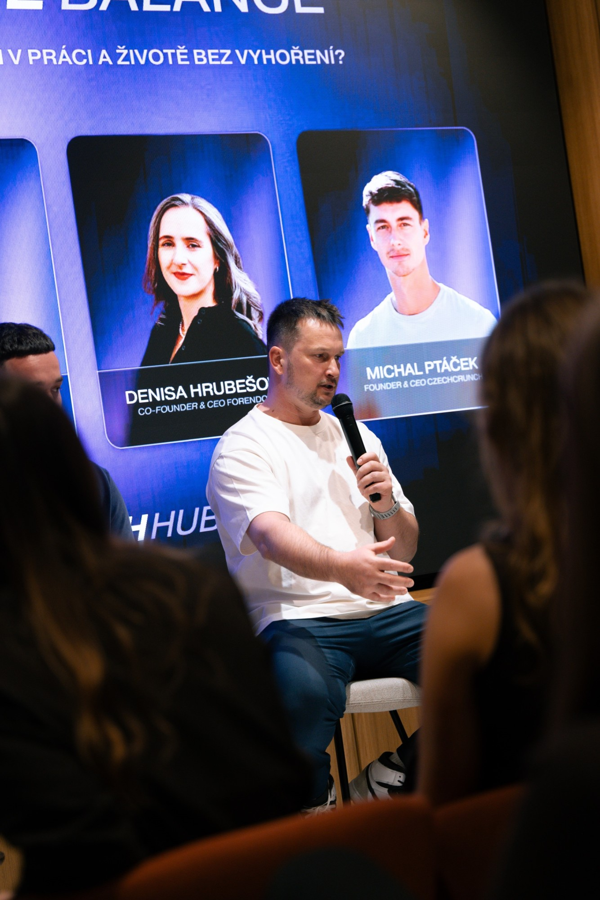

Pomáhám vrcholovým sportovcům, týmům i lídrům v byznysu podávat stabilní výkon pod tlakem. Mentálnímu tréninku se věnuji od roku 2018, dnes jako spoluzakladatel Winning Minds.
S čím sportovcům pomáhám: nervozita před zápasem, výkon pod tlakem, strach z porážky, motivace, sebevědomí a analýza dat.
O mně
Od roku 2018 se profesionálně věnuji mentálnímu tréninku a propojuji ho s trenérskou praxí. Na kurtu jsem znovu a znovu viděl, že o výsledku často nerozhoduje technika, ale hlava. Dnes jako spoluzakladatel Winning Minds připravuji vrcholové sportovce, extraligové týmy i lídry v byznysu.
Co dělám.
Mentální trénink, koučink a mentoring pro jednotlivce, týmy i firmy.
Jednotlivci · sport i byznys
Mentální trénink a koučink.
Individuální příprava pro sportovce, manažery a majitele firem. Pracuji s mindsetem, strategií a self-coachingem a vše opírám o analýzy a diagnostiku, ne o dojmy.
MindsetHlava nastavená na výkon
StrategiePlán na zápas i sezónu
Self-coachingNástroje do každého dne
AnalýzyVýkon podložený daty
DiagnostikaStres a nervový systém
Soustředění0 %
Hluk v hlavěKlid a fokus
Zkuste do toho vjet kurzorem
Týmy, akademie, firmy
Dlouhodobý mentoring.
Týmová sezení, individuální podpora hráčů a pravidelné vyhodnocování po celou sezónu. S extraligovým Kladnem už pátou sezónu, s Albatross Golf Academy dva roky.
Trenérská praxe
Na kurtu.
Tenisovým trenérem jsem od roku 2007, od roku 2018 v kombinaci s mentálním tréninkem. Technika a hlava hráče u mě jdou ruku v ruce.
Kurt 23,77 × 10,97 m
Sidequest
Vibecoding.
Po večerech stavím s AI vlastní nástroje. Včetně tohohle webu.
$ vibe web
✓ hotovo

Příběh
Odbornost postavená na praxi.
Mentálnímu tréninku se profesionálně věnuji od roku 2018, od začátku v kombinaci s trenérskou praxí. První roky jsem pracoval pod značkou Brain Training, v roce 2022 jsem spolu s Milanem Večeřou založil Winning Minds.
Mám mezinárodní certifikace ISMCA a GPTCA (ATP), výcvik profesionálního kouče s akreditací MŠMT a univerzitní studium mentálního koučinku ve sportu a byznysu. Tradiční koučink doplňujeme o diagnostiku stresu, práci s dechem a neurovizuální trénink, takže se neřídíme jen pocitem, ale daty.
Ve volném čase hraju golf a jako sidequest stavím s pomocí AI vlastní nástroje. Včetně tohohle webu.
Mysl
Mentální odolnost
Zvládání tlaku
Soustředění
Metody
Diagnostika stresu
Práce s dechem
Neurovizuální trénink
Praxe
Tenisový trénink
Týmový mentoring
Workshopy a přednášky
Metoda
Méně dojmů. Víc dat.
Ve Winning Minds jsme s Milanem Večeřou dali mentálnímu tréninku jasnou strukturu. Každá spolupráce prochází třemi fázemi.
01
Diagnostika
Zjistíme, jak reagujete na stres a kde vám utíká energie i soustředění. Víme, od čeho se odrazit.
02
Plán na míru
Podle výsledků navrhneme trénink přesně pro vás: práci s dechem, soustředěním, sebedůvěrou i rutinami před výkonem.
03
Pravidelný trénink
Trénujeme průběžně a pokrok znovu vyhodnocujeme. Mentální forma se buduje stejně jako ta fyzická.
Zkušenosti
Od kurtu k vrcholu.
Trenérská praxe od roku 2007, mentální trénink od roku 2018.
2022 – dnes
Winning Minds
Spoluzakladatel a jednatel. S Milanem Večeřou zajišťujeme komplexní mentální přípravu pro vrcholové sportovce, týmy, kluby i firmy.
Mezi klienty
Volejbal Kladnoextraliga, 5. sezóna
Albatross Golf Academy2 roky
Wisconsin Badgersuniverzitní sport USA
2018–2022
Brain Training
Mentální koučink pod vlastní značkou, od začátku propojený s trenérskou praxí.
Od roku 2007
Tenisový trenér
Trenérská praxe na kurtu, ze které vychází můj přístup k mentálnímu tréninku.
Vzdělání a certifikace
Na čem stavím.
Mezinárodní certifikace a univerzitní studium, na kterých stavím svou práci.
2022–2023
Newton University
Studium mentálního koučinku ve sportu a byznysu.
2022
Profesionální kouč
Roční výcvik s akreditací MŠMT.
2021
Neurotraining Institute
Kurz neurovizuálního tréninku.
2019
ISMCA
International Sport Mental Coach Association, mentální koučink, úroveň 1 a 2.
2018
GPTCA
Global Professional Tennis Coach Association, úroveň B a C (certifikace ATP).
2007
První trenérská sezóna
Začátek trenérské kariéry na tenisovém kurtu.
Forbes
Muži v pozadí. Kdo jsou experti po boku elitních sportovců Česka?